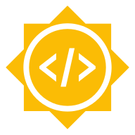

Acknowledgments¶
We are very grateful for your continuing support for LiberTEM!
Please help us keeping these lists up-to-date and complete! If you feel that you should be listed here, please contact us. We are grateful for every contribution, and if your contribution is not listed here we’d like to extend our apologies and update this as soon as possible.
Creators¶
The following people in alphabetical order contributed to source code, documentation, design and management following our Authorship policy.
- Jan Caron (Jülich Research Centre) ORCID GitHub
Discussions, advanced color wheel for vector field visualization
- Rahul Chandra (Chandigarh University) GitHub
Test and update of examples
- Alexander Clausen (Jülich Research Centre) ORCID GitHub
System design, engineering, implementation, documentation, management, majority of the code
- Rafal E. Dunin-Borkowski (Jülich Research Centre) ORCID
Scientific advisory, resources, discussion, publications
- Vadim Migunov (RWTH Aachen University, Jülich Research Centre, Ernst Ruska-Centre) ORCID GitHub
Scientific advisory, discussion, sample data, binning prototype, holography features
- Knut Müller-Caspary (Jülich Research Centre) ORCID
Scientific advisory, discussion, sample data regarding strain mapping, sample code for MIB reader
- Magnus Nord (University of Antwerp) ORCID GitHub
Discussions, tests, code in related projects
- Colin Ophus (Lawrence Livermore National Lab) ORCID GitHub
Discussions, sample code for K2 reader, overview of related projects, reference files
- Simon Peter GitHub
Help with setting up AppImage building and Continuous Integration
- Karina Ruzaeva (Jülich Research Centre) ORCID GitHub
Fast diffraction analysis
- Jay van Schyndel (Monash University eResearch Centre) GitHub
Fix issue 80 to allow container deployment
- Jaeweon Shin (ETH Zürich) GitHub
Single pass numerically stable standard deviation
- Dieter Weber (Jülich Research Centre) ORCID GitHub
Management, requirements analysis, system design, testing, documentation, communication
Contributions¶
The following people in alphabetical order contributed to the LiberTEM project in other ways.
- @theassassin GitHub
Help with setting up AppImage building and Continuous Integration
- Juri Barthel (FZ Jülich)
Discussions, compatibility with Dr. Probe
- Reimar Bauer (FZ Jülich)
Help with Google Summer of Code 2019
- Julian Becker (X-Spectrum)
Discussions, system design, funding applications
- Andreas Beckmann (X-Spectrum)
Discussions, system design, funding applications
- Robert Bücker (MPSD)
Discussions, sample files
- Phillip Crout (pyXem)
Discussions, work towards mutual compatibility.
- Peter Ercius (Berkeley Lab)
Re-licensing ncempy under MIT license to allow using it in the IO part of LiberTEM, enabling full K2IS raw file, DM3/DM4, and SER support.
- Caroline Fuery (Microscopy Australia)
Discussions, supporting deployment on Australian eResearch infrastructure
- Patrick Furhmann (DESY)
Discussions, system architecture
- Wojtek James Goscinski (Monash)
Discussions, supporting deployment on Australian eResearch infrastructure
- Giulio Guzzinati (U Antwerp)
Discussions and publication https://arxiv.org/abs/1902.06979 leading to the affine transformation strain map
- Benedikt Haas (HU Berlin) GitHub
Discussions, bug reports
- Chris Hines (Monash)
Discussions, supporting deployment on Australian eResearch infrastructure
- Lothar Houben (Weizmann)
Discussions
- Martin Huth (PNDetector)
Discussions, sample files, documentation for implementing FRMS6 support
- Pete Jemian (NeXus project)
Discussions and support regarding NeXus file format
- Duncan N. Johnstone (pyXem)
Discussions, work towards mutual compatibility.
- Christoph Koch (HU Berlin)
Discussions
- Matus Krajnak (Quantum Detectors)
Bug report and fix regarding MIB format
- Alexander Krings (FZ Jülich)
Discussions, requirements description
- Weng I Lei (Gatan)
Discussions, Python support in GMS
- Anastasiia Lesnichaia (FZ Jülich)
Prototyping for scalable implementation of Single Side Band ptychography, WIP
- Penghan Lu (FZ Jülich)
Scientific advisory, discussion, sample data
- Ian MacLaren (U Glasgow)
Sample data for peak selector example, discussions, advisory
- Christoph Mahr (U Bremen)
Discussions leading to the full frame refinement code
- Shane McCartan (U Glasgow)
Sample data for peak selector example
- Heide Meissner (HZDR)
Discussions, funding applications
- Grigore Moldovan (Point Electronic)
Discussions
- Johannes Müller (HU Berlin)
Discussions
- Eduardo Nebot (Quantum Detectors)
Support, discussions, sample files, funding applications
- Liam O’Ryan (Quantum Detectors)
Support, discussions, sample files, funding applications
- Ana Pakzad (Gatan)
Discussions, support for implementing K2 raw file format
- Francisco de la Peña (Lille)
Discussions
- Tobias Richter (NeXus project)
Discussions and support regarding NeXus file format
- Robert Ritz (PNDetector)
Discussions, sample files, documentation for implementing FRMS6 support
- Kunt Sander (DESY)
Discussions, system architecture
- Michael Schuh (DESY)
Discussions, system architecture
- Martin Simson (PNDetector)
Discussions, sample files, documentation for implementing FRMS6 support
- Andy Stewart (U Limerick)
Discussions
- Murali Sukumaran (HZM)
Discussions, funding applications
- Eugene Sweeney (Iambic Innovation)
Discussions, proposal review
- Jo Verbeeck (U Antwerp)
Open data https://zenodo.org/record/2566137
- Paul Voyles (U Wisconsin)
Discussions
- Benjamin Watts (PSI)
Help and sample files towards a NeXus Application Definition for pixelated STEM.
- Roger Wepf (U Queensland)
Discussions, supporting deployment on Australian eResearch infrastructure
- Jacob Wilbrink (Gatan)
Discussions, support for implementing K2 raw file format
- Lance Wilson (Monash)
Discussions, supporting deployment on Australian eResearch infrastructure
- Florian Winkler (FZ Jülich)
Discussions, requirements description
- Markus Wollgarten (HZB)
Discussions, funding applications
- Wolfgang zu Castell (HZM)
Discussions, funding applications
Notable upstream projects¶
Python, PyData universe, Dask.distributed, PyTorch, NumPy, OpenBLAS, Click, Tornado web, Matplotlib, Pillow, H5Py, Numba, Psutil, Ncempy
TypeScript, React, React Window, Redux, Redux-saga, Semantic UI
Not dependencies, but notable related projects or useful tools: Hyperspy, NeXus, Apache Spark, Hadoop file system, Godbolt compiler explorer, FIO, pyXem
Funding¶
LiberTEM kindly acknowledges funding and support from the following sources:
ERC Proof-of-Concept grant VIDEO¶

This project has received funding from the European Research Council (ERC) under the European Union’s Horizon 2020 research and innovation programme (grant agreement No 780487).
CritCat¶
This project has received funding from the European Union’s Horizon 2020 research and innovation programme under grant agreement No 686053.
ESTEEM3¶
This project has received funding from the European Union’s Horizon 2020 research and innovation programme under grant agreement No 823717 – ESTEEM3.
ERC Synergy grant 3D MAGiC¶
This project has received funding from the European Research Council (ERC) under the European Union’s Horizon 2020 research and innovation programme (grant agreement No 856538).
moreSTEM¶

We gratefully acknowledge funding from the Initiative and Networking Fund of the Helmholtz Association within the Helmholtz Young Investigator Group moreSTEM under Contract No. VH-NG-1317 at Forschungszentrum Jülich in Germany.
Ptychography 4.0¶

We gratefully acknowledge funding from the Information & Data Science Pilot Project “Ptychography 4.0” of the Helmholtz Association.
Google Summer of Code¶
{kind=link}
We kindly acknowledge funding from Google Summer of Code 2019 under the umbrella of the Python software foundation.
Gatan Inc.¶
STEMx equipment and software for 4D STEM data acquisition with K2 IS camera courtesy of Gatan Inc.
Forschungszentrum Jülich, Ernst-Ruska Centrum¶

Forschungszentrum Jülich is supporting LiberTEM with funding for personnel, access to its infrastructure and administrative support.